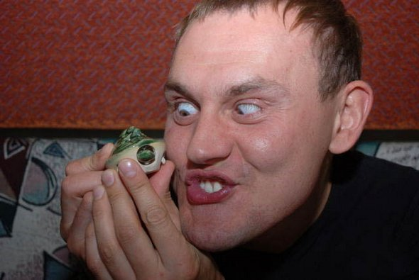

CSS Examples
Simple Button
Press Me
Using box shadow, text shadow, and hover to give the button depth.
Ease Out Color Transition
Using transition of 2 seconds ease out to change colors of image.
Slide From Side
Using box shadow, text shadow, and hover from the example used during class to give the button depth.
Bouncing Picture

Using "animation-iteration-count:infinite" to make the movemenet loop and "animation-direction: alternate" to make it bounce back and forth with a duration of 1 second.
Red Circle To Black Square On Click
Using border-radius and transition all to change red circle to a black square with a 1 second delay on click.
Rotate
Used "transform:rotate" to spin the image.
Zoom With Border
Using 2 second ease to transition in shaded border and zoom in.
Graph
This crap is pissing me off and won't align to the bottom!!!!!!!!
Text Shadow
Text Shadow ... Don't know if this is even counts.
This isn't very impressive at all but I am really running out of ideas.
Roll To Side
Using rotate and % margins to roll the spinning image to one side.
Falling Woman
Oh shit finally got this one to work. Using keyframes and a repeating animation made her fall from the sky.
Triangle
You guessed it ... it's a triangle. Used transparent left and right borders with a solid bottom to create the triangle and to make it less boring added a transition to a colored background behind the triangle.
CSS EXAMPLES
Descrip goes here.